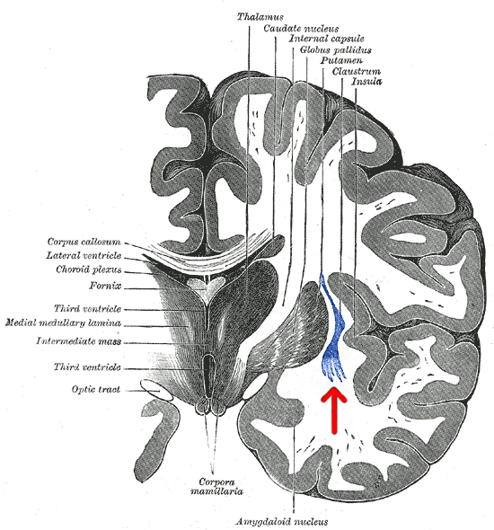

전장 (claustrum)

| # | 원문 | 한국어 | 설명 |
|---|---|---|---|
| 1 | Thalamus | 시상 | |
| 2 | Caudate nucleus | 꼬리핵 | |
| 3 | Internal capsule | 속섬유막(내포) | |
| 4 | Globus pallidus | 창백핵(담창구) | |
| 5 | Putamen | 조가비핵(피각) | |
| 6 | Claustrum | 전장 | |
| 7 | Insula | 섬엽 | |
| 8 | Corpus callosum | 뇌량 | |
| 9 | Lateral ventricle | 가쪽뇌실(측뇌실) | |
| 10 | Choroid plexus | 맥락총 | |
| 11 | Fornix | 뇌활 | |
| 12 | Third ventricle(두 곳) | 제3뇌실 | |
| 13 | Medial medullary lamina | 내측수질판 | |
| 14 | Intermediate mass | 시상간교 | |
| 15 | Optic tract | 시각로 | |
| 16 | Corpora mamillaria | 유두체 | |
| 17 | Amygdaloid nucleus | 편도체핵 |
쉽게 풀면
전장은 섬피질과 선조체 사이에 얇은 판 모양으로 자리한 회백질 덩어리이다. 크기는 작지만 여러 피질 영역과 폭넓게 연결되어 있어, 서로 멀리 떨어진 영역들을 잇는 '허브' 같은 구조로 논의된다. 경계가 뚜렷하지 않고 주변 구조와 이어져 있어서, 어디까지를 전장으로 볼지 정의하는 문제 자체가 연구 주제가 되기도 한다.
왜 중요한가
여러 피질 영역과 연결된 소수의 구조가 있다면, 정보 통합이나 주의 배분처럼 뇌 전체를 조율하는 기능의 후보가 된다. 그래서 전장은 감각 통합, 주의, 서파 수면 중의 피질 활동 조율 등 여러 맥락에서 검토되어 왔다. 최근에는 분자 표지와 경로 추적 기술이 발전하면서 전장 뉴런을 주변 구조와 구별해 다루는 연구가 늘고 있다.
어디에 있고 어떻게 생겼나
- 전장은 섬엽과 조가비핵(선조체) 사이에 끼어 있는 얇은 판 모양의 회색질이다. 섬엽과의 사이는 최외포, 조가비핵과의 사이는 외포라는 얇은 백질층이 가른다.
- 크기는 작지만 대뇌피질의 여러 영역과 서로 연결되어 있다고 알려져 있다(Crick & Koch, 2005). 생쥐에서 전장과 피질 사이 연결의 조직을 체계적으로 정리한 연구도 있다(Wang 등, 2017).
- 경계가 분명하지 않다. 사람에서는 비교적 넓은 판이지만 설치류에서는 섬엽 깊은 층과 구분이 어려울 만큼 얇아서, 위치만이 아니라 특정 유전자 발현과 투사 패턴을 함께 써서 세포 집단을 정의하는 연구가 많다. 인접한 피질 6b층 뉴런과의 구별이 방법론적 과제이다.
- 기능이 확정되지 않은 구조라서 책마다 ‘전장’의 범위 설명이 조금씩 다를 수 있다.
맡은 기능
- 가설: 통합과 의식: Crick과 Koch(2005)는 전장이 여러 감각·피질 영역의 정보를 묶어 의식의 통일에 기여할지 모른다는 가설을 제안했다. 이 가설은 지금도 검증되지 않았으며 ‘의식의 스위치·지휘자’ 같은 표현은 대중적 비유일 뿐이다.
- 사람 사례: 한 명의 뇌전증 환자에서 전장 부근에 둔 전극을 자극하자 의식과 반응이 일시적으로 사라졌다가 자극을 멈추면 돌아왔다는 보고가 있다(Koubeissi 등, 2014). 환자가 한 명이고 전극이 주변 구조(섬엽, 백질)도 자극했을 수 있어 전장의 기능을 증명했다고 보기는 어렵다.
- 동물 연구: 생쥐에서 전장 뉴런이 전전두피질 활동을 순효과로 억제하는 것으로 보고되었고(Jackson 등, 2018), 주의·현저성 처리에 관여한다는 관점(Goll 등, 2015)이 제시되어 있다.
- 정리하면 ‘피질 여러 곳에 폭넓게 신호를 보내는 구조’라는 점까지는 비교적 합의되어 있고, 그것이 무엇을 계산하는지는 열린 질문이다.
연구에서 다루는 방식
- 방법: 바이러스로 입력·출력 경로를 추적하고, 광유전학이나 화학유전학으로 전장 뉴런을 켜거나 끄며 행동을 본다. 사람 연구는 영상으로 전장을 분할하기 어려워(얇고 경계가 불분명) 병변 사례와 소수의 고자장 MRI 연구에 의존한다.
- 선택적 표적의 어려움: 설치류에서 전장만 정확히 조작하기 어려워, 결과에 인접 섬엽이나 심층 피질 뉴런의 효과가 섞일 가능성을 늘 고려해야 한다. 주입 위치를 조직학적으로 확인했는지, 표적 특이성을 어떻게 검증했는지 확인해야 한다.
- 해석 주의: ‘전장이 의식을 만든다’는 식의 결론은 의식 자체를 시험한 실험이 아니라 주의·감각 처리 과제 결과에서 나온 경우가 많다. 어떤 과제로 무엇을 측정했는지 읽어야 한다.
- 종 차이(사람과 설치류의 크기와 위치)와 마취 여부도 결과 해석에 영향을 준다.
논문에서는 이렇게 쓰입니다
실제 논문에서
이 용어를 직접 쓴 국내 논문 문장은 아직 모으지 못했다. 모이는 대로 출처와 함께 싣는다.
예시 문장
아래 예문은 용어의 쓰임을 보이려고 만든 것으로, 실제 논문 문장이 아니다.
연결의 폭과 수렴·발산 양상을 근거로 전장의 위상적 위치를 기술한 문장이다.
경계가 모호한 구조를 다룰 때 표지를 이용해 세포 집단을 먼저 정의하는 접근을 보여준다.
조금 더 깊게 보면
전장은 종에 따라 모양과 크기가 크게 달라, 사람에서는 비교적 넓은 판을 이루지만 설치류에서는 섬피질 심층과 구분이 어려울 정도로 얇다.
이 때문에 위치만으로 정의하기보다 특정 유전자 발현과 투사 표적을 함께 이용해 세포 집단을 정의하는 방식이 널리 쓰이며, 인접한 피질 6b층 뉴런과의 구별이 중요한 방법론적 과제로 다뤄진다.
기능 연구에서는 광범위한 피질 투사 때문에 소수의 세포가 여러 영역에 동시에 영향을 줄 수 있다는 점이 주목되지만, 구체적으로 무엇을 계산하는지에 대해서는 합의된 결론이 아직 없다.
전장은 뇌섬엽과 바닥핵 사이에 위치한 얇은 회색질 판으로, 거의 모든 대뇌피질 영역과 광범위하게 상호 연결되어 있으면서도 각 피질 영역과의 연결이 지형적으로 정교하게 구획되어 있는 독특한 연결 패턴을 보인다.
이런 전방위적 연결성 때문에 여러 감각 양식과 피질 영역의 정보를 통합해 의식의 통일성이나 주의 조절에 관여할 것이라는 가설(예: 크릭과 코흐의 제안)이 제기되어 왔다.
주의할 점
'의식의 스위치'처럼 단정적인 표현이 대중적으로 유통되지만, 이는 검증된 결론이 아니라 가설 수준의 논의이다. 또한 설치류에서 전장만을 선택적으로 표적하기 어렵기 때문에, 조작 실험 결과가 인접 섬피질이나 심층 피질 뉴런의 효과를 포함할 가능성을 항상 고려해야 한다.
전장은 크기가 매우 작고 얇아 기존 영상 기법으로 정확히 경계를 구분하기 어려웠기 때문에 그 기능에 대한 증거 대부분이 소수의 병변 사례 보고나 최근의 광유전학 연구에 의존하고 있어, '의식의 지휘자'라는 대중적으로 널리 퍼진 해석은 아직 확정된 결론이 아니라 여러 가설 중 하나로 신중하게 받아들여야 한다.
헷갈리기 쉬운 용어
| 용어 | 위치와 성격 | 전장과 구별하는 점 |
|---|---|---|
| 전장 | 섬엽과 조가비핵 사이의 얇은 회색질 판 | 경계가 불분명하고 기능이 열린 질문 |
| 섬엽 | 외측구 깊숙이 접힌 대뇌피질 | 피질(층 구조)이며 전장 바로 바깥에 있음 |
| 선조체 | 기저핵의 입력부(조가비핵·꼬리핵) | 전장 안쪽, 외포로 분리됨 |
| 피질 6b층(하판 뉴런) | 피질 가장 깊은 층의 세포 | 전장과 표지 유전자가 일부 겹쳐 구별이 필요 |
참고 문헌
- Crick, F. C., & Koch, C. (2005). What is the function of the claustrum? Philosophical Transactions of the Royal Society B, 360(1458), 1271–1279.
- Koubeissi, M. Z., Bartolomei, F., Beltagy, A., & Picard, F. (2014). Electrical stimulation of a small brain area reversibly disrupts consciousness. Epilepsy & Behavior, 37, 32–35.
- Goll, Y., Atlan, G., & Citri, A. (2015). Attention: the claustrum. Trends in Neurosciences, 38(8), 486–495.
- Wang, Q., Ng, L., Harris, J. A., et al. (2017). Organization of the connections between claustrum and cortex in the mouse. Journal of Comparative Neurology, 525(6), 1317–1346.
- Jackson, J., Karnani, M. M., Zemelman, B. V., Burdakov, D., & Lee, A. K. (2018). Inhibitory control of prefrontal cortex by the claustrum. Neuron, 99(5), 1029–1039.
표의 기준값은 위 문헌에 따른 관례이고, 분야·학술지마다 기준이 다를 수 있다.